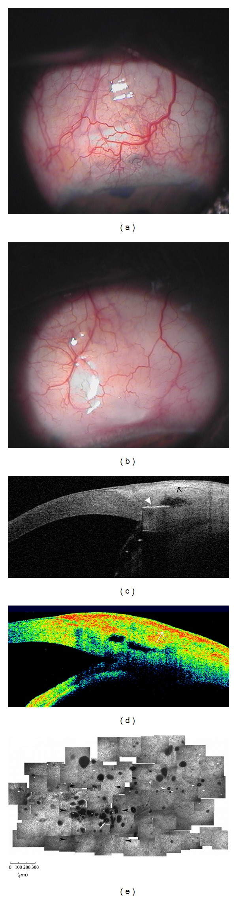
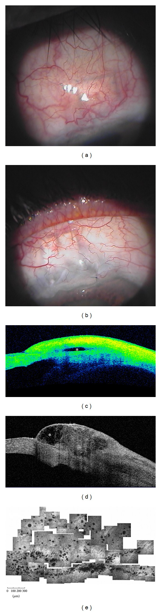
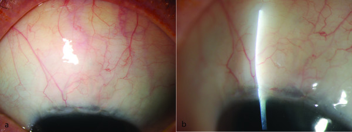
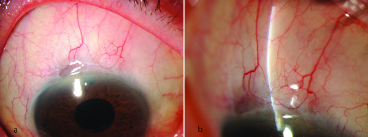

1983 — Đục thể thủy tinh sau trabeculectomy: phaco trên mắt có bọng lọc làm hỏng bọng thế nào, và làm sao để không tự tay phá bọng / Cataract after trabeculectomy and phacoemulsification in the bleb eye
Tags: pattern:duc-the-thuy-tinh pattern:duc-nhan pattern:duc-duoi-bao-sau pattern:bleb-xo pattern:bleb-det pattern:bleb-dang-nang pattern:tang-nhan-ap-sau-phaco vung:the-thuy-tinh vung:mat vung:tien-phong protocol:den-khe protocol:AS-OCT protocol:phaco protocol:gonioscopy score:WBCS
Mức chắc chắn (certainty): tổng hợp y văn (literature synthesis) — ghép 1 nghiên cứu đoàn hệ 122 mắt (Sałaga-Pylak, BMC Ophthalmol 2013, PMC3638009, CC BY 2.0), 2 phân tích từ đoàn hệ CBIITS 1.098 mắt (PMC6812865; PMC8066976), 1 phân tích gộp 25 nghiên cứu / 4.749 mắt (PMC7896844), 1 nghiên cứu nội mô 60 mắt (PMC8526602) và 1 nghiên cứu hình thái bọng bằng AS-OCT (PMC4127298). Chỗ suy luận được ghi rõ "suy luận"; chỗ y văn chưa có số liệu trực tiếp ghi "chưa rõ".
Vì sao bài này quan trọng: đục thể thủy tinh là biến chứng muộn thường gặp nhất của trabeculectomy, nên gần như mắt nào có bọng lọc tốt rồi cũng sẽ đến lúc phải phaco. Câu hỏi thực hành không phải "bọng có thể hỏng không" (có, và mất ~25–40% chức năng trong 5 năm) mà là "IOP tăng sau phaco là do bọng xơ thật, hay chỉ là đáp ứng corticoid, OVD còn sót, hay viêm thoáng qua — và khi nào thì gọi là thất bại". Gọi sớm → mổ/needling oan một bọng còn tốt; gọi muộn → thần kinh thị đã mất thêm trong khi bọng đã xơ không hồi.
1. Tổng quan bệnh học – cơ chế hình ảnh: vì sao mắt có bọng lại đục, và vì sao phaco lại phá bọng
1.1 Đục thể thủy tinh sau trabeculectomy: hai lực cộng lại
- Lực thứ nhất — tuổi và tiến triển tự nhiên. Tuổi trung bình trong các loạt trabeculectomy là ~70 tuổi (70,7 ± 7,0 ở nhóm phaco sau trab, 70,8 ± 6,3 ở nhóm chứng; PMC3638009), đúng độ tuổi đục nhân sinh lý tăng nhanh.
- Lực thứ hai — chính cuộc mổ lọc. Bọng lọc làm giảm lưu lượng thủy dịch đi qua tiền phòng, gây hạ nhãn áp tương đối, tiền phòng nông, viêm dưới lâm sàng kéo dài và vỡ hàng rào máu–thủy dịch. Ba hệ quả trực tiếp lên thể thủy tinh:
- Giảm "dinh dưỡng" bề mặt: thủy dịch mang acid ascorbic và glutathion cho biểu mô và vỏ trước; lưu lượng giảm + thành phần thủy dịch đổi (protein tăng khi hàng rào vỡ) → stress oxy hóa ở vỏ trước và biểu mô thể thủy tinh.
- Tiếp xúc nội mô–vỏ trước khi tiền phòng nông: vùng tiếp xúc mất lớp nước đệm, tế bào biểu mô bị kích thích và chuyển sản → đục dưới bao trước và đục vỏ.
- Viêm và phản ứng tiền phòng tái diễn (đặc biệt sau needling, sau bơm 5-FU) → đục dưới bao sau (PSC) nhanh.
- Con số phải nhớ: y văn dẫn từ vài % đến vài chục % mắt đục thể thủy tinh sau mổ lọc, tùy thời gian theo dõi và tuổi (PMC3638009, phần Background — bài gốc dẫn nguồn 12, 13). Chưa có con số thống nhất cho quần thể Việt Nam — ghi "chưa rõ", không bịa.
- Vì sao đục lại quan trọng với bọng: đục thể thủy tinh làm giảm thị lực đúng lúc bọng còn tốt; nếu chờ quá lâu, mắt mất cửa sổ theo dõi đáy mắt và thị trường, và mổ muộn trên mắt đã hypotony/viêm mạn thì nội mô đã mỏng — chính là nhóm mất nội mô nhiều nhất (mục 1.3).
1.2 Phaco trên mắt có bọng: bốn cơ chế phá bọng, xếp theo mức bằng chứng
- Viêm và xơ hóa thành bọng (cơ chế chính, có bằng chứng định lượng). Phaco giải phóng TGF-β, IL-6, FGF từ biểu mô và mô kết mạc; nguyên bào sợi dưới kết mạc tăng sinh và co rút → thành bọng dày, diện tích và độ cao bọng giảm, dòng thoát giảm. Trong 50 mắt phaco sau trab thành công, diện tích bọng nhỏ dần có ý nghĩa (χ²(6) = 33,9; p < 0,001) và độ cao bọng giảm (χ²(6) = 38,2; p < 0,001), trong khi 72 mắt chứng không đổi (p = 0,6 và 0,7) (PMC3638009). Đây là bằng chứng hình thái mạnh nhất cho "phaco làm xẹp bọng".
- Mất gradient xuyên bọng. Khi phaco làm sâu tiền phòng và hạ IOP, chênh áp qua lỗ lọc giảm; bọng xẹp cơ học, dính thành–củng mạc, rồi xơ. Cơ chế này giải thích vì sao bọng giảm độ cao ngay 24 giờ sau phaco (Z = 2,3; p = 0,02 so với trước mổ; PMC3638009).
- Thao tác trên kết mạc. Đường vào xuyên giác mạc vùng rìa phía trên (nơi có bọng) hoặc dụng cụ đè kết mạc làm rách biểu mô, đưa nguyên bào sợi vào bọng. Đây là biến số kiểm soát được bằng kỹ thuật (mục 4) — bằng chứng chủ yếu là cơ chế và thực hành, không có RCT so sánh đường rạch trên vs thái dương.
- Tăng IOP sớm sau mổ = dấu tiên lượng xấu, không phải "chuyện nhỏ". Trong nhóm phaco sau trab, xác suất thành công theo Cox là 70% ở 24 giờ, 54% ở 14 ngày, 42% ở 1 tháng sau phaco (PMC3638009). Nói cách khác: mắt tăng IOP ngay trong tháng đầu sau phaco có nguy cơ thất bại bọng rất cao — đây là cửa sổ can thiệp.
1.3 Các con số quyết định
- IOP trước và sau phaco (50 mắt, trab bằng 5-FU): 11,6 ± 3,8 mmHg trước; 14,4 ± 3,9 (24 giờ), 13,8 ± 3,4 (10 ngày), 13,5 ± 3,4 (1 tháng), 13,3 ± 3,5 (6 tháng), 13,1 ± 2,8 (12 tháng), 13,2 ± 2,9 mmHg (18 tháng); nhóm chứng 11,0 → 11,5 mmHg (PMC3638009). Tăng IOP xảy ra ở 70% mắt phaco so với 36% mắt chứng trong 18 tháng.
- Xác suất thành công (IOP < 17 mmHg, không thuốc): 75 / 75 / 71% ở 6 / 12 / 18 tháng (nhóm phaco) so với 92 / 92 / 91% (nhóm chứng); Wald p = 0,006, Exp(B) = 3,7; thời gian thất bại trung bình 14,6 vs 17,2 tháng (PMC3638009).
- Đoàn hệ CBIITS (1.098 mắt trab + MMC, 34 trung tâm): sau 5 năm, thành công 40,0% vs 59,1% (tiêu chí A: IOP ≥ 21 mmHg, p = 0,01), 35,0% vs 52,9% (B: ≥ 18 mmHg, p = 0,01), 25,0% vs 37,5% (C: ≥ 15 mmHg, p = 0,08) — nhóm trab rồi phaco so với trab đơn thuần; khoảng cách trab → phaco càng ngắn, nguy cơ thất bại càng cao (PMC6812865).
- Phacotrab một thì vs trab rồi phaco: thành công không khác khi không kiểm duyệt, nhưng khi kiểm duyệt các ca phaco trong 5 năm, nhóm trab rồi phaco thành công cao hơn ở cả 3 tiêu chí (p = 0,02 / < 0,01 / < 0,01); IOP trước mổ thấp, tuổi trẻ và mổ kết hợp là yếu tố tiên lượng xấu (PMC8066976).
- Mất tế bào nội mô giác mạc (ECD): 3,1% sau trab đơn thuần, 17,9% sau phaco, 31,6% sau phacotrab một thì, 42,6% sau phacotrab hai thì (trab, rồi phaco sau 3 tháng) — tức hai lần can thiệp vào tiền phòng đắt hơn một lần (PMC8526602).
- Phân tích gộp 25 nghiên cứu / 4.749 mắt: IOP trung bình không khác giữa phacotrab và trab (kèm/không kèm phaco sau) — MD 0,63 mmHg (95% CI −0,32 đến 1,59) và −0,52 (−1,45 đến 0,40); phacotrab ít biến chứng hơn (RR 0,80; 95% CI 0,67–0,95) và thị lực tốt hơn 1,4 dòng (PMC7896844). Đọc đúng: "ít biến chứng hơn" không có nghĩa "bọng bền hơn" — hai câu hỏi khác nhau.
2. Mẫu hình + chẩn đoán phân biệt theo thời điểm (gamut)
Ba câu hỏi với mọi mắt có bọng lọc bị đục thể thủy tinh: (1) bọng còn chức năng không (IOP mục tiêu, không thuốc)? (2) đục ở mức nào và có cản trở theo dõi đáy mắt? (3) phaco sẽ đặt vào đâu trong trục thời gian — một thì, hai thì, hay hoãn?
- Trước mổ (mẫu hình chỉ định): IOP đạt mục tiêu không thuốc với bọng khu trú; đục nhân vàng hoặc PSC ở trục quang; thị lực giảm ≥ 2 dòng hoặc không đọc được OCT/đáy mắt. Đây là đục thật, không phải tổn thương thoáng qua (so với 1935).
- Ngày 1–7 sau phaco: IOP có thể tăng nhẹ do OVD còn sót, viêm, máu tiền phòng; bọng giảm độ cao (p = 0,02). Không gọi thất bại ở giai đoạn này.
- 1–6 tháng: bọng xẹp dần, diện tích giảm (p < 0,001); IOP tăng dần dù chưa vượt ngưỡng. Đây là lúc đo lại IOP không thuốc và chụp AS-OCT bọng.
- 6–18 tháng: thất bại chức năng — IOP ≥ 17 mmHg không thuốc (hoặc ≥ 21 mmHg theo tiêu chí A của CBIITS); thời điểm thất bại trung bình 14,6 tháng sau phaco (PMC3638009).
- Muộn, hướng ngược lại: hypotony (IOP thấp, hoàng điểm nhăn) và rò bọng — vẫn xảy ra sau phaco trên mắt bọng mỏng; không được chỉ nghĩ đến "tăng áp".
- Mẫu hình hình ảnh:
- Đèn khe: bọng lan tỏa (diffuse) hoặc dạng nang (cystic) với vi nang (microcysts) lấp lánh = còn chức năng; bọng dẹt (flat) hoặc dạng nang Tenon dày (encapsulated) = mất chức năng (PMC4127298).
- AS-OCT bọng: bọng tốt có khoang giảm hồi âm (low-reflective cavity), thành mỏng, nhiều vi nang; bọng hỏng có thành dày, khoang hẹp/biến mất, mô đặc tăng hồi âm (PMC4127298).
- Hiển vi đồng tiêu (confocal): mật độ vi nang giảm rõ ở bọng hỏng — dùng khi cần khách quan hóa "bọng còn hay mất" trước khi quyết định needling.
- Đáy mắt/OCT thần kinh thị: đo RNFL/GC-IPL trước và sau phaco — IOP tăng có ý nghĩa chỉ khi kèm mất thần kinh thị, không chỉ là con số.
3. Bảng so sánh phân biệt (ma trận đối chiếu)
| Thực thể (entity) | Hình ảnh điển hình | Chốt vào (rule-in) | Chốt loại (rule-out) | Gợi ý xác nhận |
|---|---|---|---|---|
| Suy bọng do xơ hóa sau phaco | Bọng dẹt, thành dày, mất khoang dịch trên AS-OCT; IOP tăng dần 1–18 tháng | Tiền sử phaco trên mắt có bọng + IOP không thuốc tăng ≥ 3 mmHg so với trước phaco + bọng mất khoang dịch | Bọng còn khoang giảm hồi âm + vi nang + IOP không đổi | AS-OCT bọng + IOP không thuốc 3 lần; so ảnh trước/sau |
| Bọng dạng nang Tenon (encapsulated bleb) | Vòm khu trú, thành dày, mạch máu to; AS-OCT: khoang lớn thành dày > 1 mm, không vi nang | Bọng cao khu trú bất thường + IOP tăng + đau/khó chịu | Bọng lan tỏa mềm, vi nang, IOP tốt | Đèn khe + AS-OCT; phân biệt với bọng "cao" lành tính |
| Đáp ứng corticoid | Giác mạc trong, tiền phòng yên, bọng không đổi; IOP tăng 2–6 tuần sau khi tăng liều corticoid | IOP tăng đúng mốc thêm corticoid + bọng nguyên vẹn + giảm khi ngừng/giảm | Bọng dẹt/xơ, IOP tăng kèm thay đổi hình thái bọng | Ngừng/giảm corticoid, đo lại 1–2 tuần |
| OVD còn sót / tăng IOP sớm sau phaco | Tiền phòng có chất nhầy trong, IOP vọt ngày 1–3, bọng có thể xẹp tạm | IOP vọt trong 72 giờ + tiền phòng sâu, không viêm | IOP tăng sau 1 tháng, bọng xẹp tiến triển | Rửa tiền phòng nếu cần; đáp ứng nhanh với hạ áp |
| Glôcôm ác tính / block đồng tử | Tiền phòng dẹt, IOP cao, lỗ mống mắt (PI) thông | Tiền phòng dẹt + IOP cao + PI thông | Tiền phòng sâu, bọng dẹt = suy bọng | Siêu âm/UBM, xem 1448 |
| Hypotony maculopathy | IOP ≤ 6 mmHg, hoàng điểm nhăn nheo trên OCT, bọng quá lớn/rò | IOP thấp kéo dài + nếp gấp hoàng điểm + thị lực giảm | IOP bình thường/cao | OCT hoàng điểm; soi bọng tìm rò (Seidel) |
| Phù hắc mạc / tràn dịch | Siêu âm: dịch dưới hắc mạc, hắc mạc dày; tiền phòng nông | Tiền phòng nông + IOP thấp + siêu âm có dịch | Tiền phòng sâu, bọng xẹp | Siêu âm B/UBM |
4. Protocol chụp – kỹ thuật phaco trên mắt có bọng + cách cho điểm bọng
4.1 Trước mổ: đo cái gì, ở đâu
- IOP không thuốc (washout) ít nhất 4 tuần nếu an toàn, để biết bọng đang gánh bao nhiêu; ghi rõ số thuốc và thời điểm so với phaco.
- Đèn khe + ảnh bọng: chụp cùng một góc, cùng đèn để so sánh về sau — đây là "hồ sơ bọng", không phải ảnh minh họa.
- AS-OCT bọng (nếu có): đo chiều cao khoang, độ dày thành, mật độ vi nang; đo bề dày giác mạc trung tâm (CCT) và ECD để tư vấn nguy cơ nội mô.
- Đáy mắt/OCT thần kinh thị làm mốc thị lực–thần kinh trước mổ.
4.2 Kỹ thuật: "không chạm bọng"
- Đường rạch giác mạc trong (clear cornea) thái dương, 2,4–2,6 mm, tránh tuyệt đối vùng rìa phía trên có bọng; không dùng đường vào xuyên bọng.
- Gây tê tại chỗ/nhỏ giọt khi phối hợp được; tránh bơm dưới kết mạc sát bọng.
- Giữ tiền phòng ổn định, tránh tăng áp trong mổ (không đè nhãn cầu, không bơm quá tay) và tránh hạ áp đột ngột (không hút mạnh) — cả hai đều làm bọng "sốc" cơ học.
- Không massage/không đè bọng trong 4–6 tuần đầu sau mổ.
- Kết thúc mổ: kiểm tra kín vết mổ (không để rò), không bơm quá căng; dùng corticoid tại chỗ giảm liều nhanh (vì vừa gây tăng IOP vừa ức chế lành bọng — cân bằng).
- Tư vấn trước mổ: nói rõ nguy cơ mất chức năng bọng ~25–40% trong 5 năm, khả năng cần thêm thuốc/needling/mổ lọc lại.
4.3 Cho điểm bọng: WBCS và AS-OCT
- Würzburg bleb classification score (WBCS): 4 thành phần — mạch máu (vascularisation), mạch xoắn ốc (cork-screw vessels), dạng nang/bao (encapsulation), vi nang (microcysts) — tổng 0–12 điểm. Trong loạt chuẩn hóa, bọng 11 điểm đi kèm IOP 13 mmHg không thuốc và bọng 6 điểm đi kèm IOP 18 mmHg (PMC3439283) — nhưng điểm cao không đồng nghĩa "không cần theo dõi". Dùng xu hướng trên cùng một mắt, không dùng làm ngưỡng tuyệt đối giữa các mắt.
- AS-OCT bọng: phân lan tỏa / dạng nang / dẹt / bao xơ theo hình thái khoang và thành; đây là cách khách quan nhất để chứng minh "bọng mất chức năng" khi IOP còn lưỡng lự (PMC4127298).
flowchart TD
A["Mat co bong loc + duc the thuy tinh"] --> B{"Bong con chuc nang? IOP muc tieu khong thuoc"}
B -->|Co| C{"Duc can tro truc quang hoac theo doi day mat?"}
B -->|Khong| D["Coi nhu mat da that bai: dieu tri glocom theo bac thang, phaco nhu mat khong con bong"]
C -->|Khong| E["Theo doi 3-6 thang: do IOP, chup bong, OCT than kinh thi"]
C -->|Co| F["Phaco duong giac mac thai duong, khong cham bong"]
F --> G["IOP + bong luc 1 tuan, 1 thang, 3 thang, 6 thang, 12 thang"]
G --> H{"IOP tang ≥ 3 mmHg so truoc phaco va bong mat khoang dich?"}
H -->|Khong| I["Thanh cong: tiep tuc theo doi 6 thang/lan"]
H -->|Co| J["AS-OCT bong + loai tru corticoid, OVD, mau tien phong"]
J --> K["Needling + 5-FU hoac mo loc lai; khong cho them qua 3 thang"]
5. Biến thể bình thường và cạm bẫy
- Bọng "cao" không phải bọng hỏng. Bọng dạng nang còn vi nang, thành mỏng, IOP tốt là biến thể lành; chỉ bao xơ thành dày + IOP tăng mới là bệnh (mục 3).
- IOP tăng 24–72 giờ sau phaco thường do OVD/viêm, không phải xơ bọng. Rửa tiền phòng và theo dõi 1 tuần trước khi kết luận; nhưng nhớ: IOP tăng 14 ngày–1 tháng đã mang tiên lượng xấu (thành công chỉ 54% ở 14 ngày, 42% ở 1 tháng; PMC3638009).
- "Phaco luôn hạ IOP" — đúng ở mắt không có bọng, sai ở mắt có bọng. Hiệu ứng hạ áp của phaco (1–3 mmHg) có thể che lấp mất bọng trong vài tháng đầu, rồi IOP bật lên khi bọng đã xơ hẳn. Đừng dùng "IOP vẫn 15 mmHg" làm bằng chứng bọng còn tốt.
- Đo IOP trên mắt có bọng: không ấn đè mạnh, không đo qua bọng; dùng tonometry không tiếp xúc nếu nghi rò, và luôn ghi rõ thuốc.
- Nhầm với tăng IOP do corticoid: sau phaco ai cũng dùng corticoid; bọng nguyên vẹn + IOP tăng rồi giảm khi giảm thuốc = do thuốc, không phải thất bại bọng.
- Bỏ sót hypotony: mắt có bọng mỏng, phaco xong IOP 5–6 mmHg, hoàng điểm nhăn → điều trị ngược với tăng áp; đọc OCT hoàng điểm trước khi tăng thuốc hạ áp.
- Cạm bẫy "một thì cho tiện": phacotrab một thì ít biến chứng hơn (RR 0,80) nhưng không cho bọng bền hơn; ngược lại, phacotrab hai thì làm mất nội mô nhiều nhất (42,6%) (PMC8526602). Chọn theo bọng và nội mô, không theo lịch mổ.
- Cạm bẫy số liệu: nhóm chứng trong PMC3638009 là mắt trab không phaco, không phải "mắt bình thường"; đừng suy ra "phaco làm tăng IOP ở mọi mắt".
6. Tự lượng giá — Blind Quiz
Ca 1 — Nam 72 tuổi, trabeculectomy + MMC 3 năm trước, IOP 12 mmHg không thuốc. Phaco thái dương 8 tháng trước; nay IOP 19 mmHg, bọng dẹt, không đau.

- Hỏi: (1) mô tả (a), (b) và (c)/(d); (2) đây có phải thất bại bọng do phaco? Vì sao không phải bao xơ Tenon? (3) bước xử trí tiếp theo?
Bấm để hiện đáp án (findings + chẩn đoán)
- (a) bọng dẹt, mạch máu nổi rõ trên nền kết mạc mỏng; (b) bọng dạng bao xơ khu trú; (c) AS-OCT: thành dày, khoang dịch hẹp, không vi nang; (d) bản đồ màu cho thấy mô đặc; phần confocal (e) rất ít vi nang so với bọng tốt.
- Chẩn đoán: suy bọng do xơ hóa sau phaco. Không phải bao xơ Tenon đơn thuần vì IOP tăng tiến triển sau phaco và không có vòm căng khu trú; cả hai đều là "bọng mất chức năng" nhưng bao xơ thường xuất hiện sớm sau trab và có vòm căng, còn ca này là xơ lan tỏa sau can thiệp thứ hai.
- Xử trí: xác nhận bằng IOP không thuốc 3 lần + AS-OCT; nếu thất bại thật → needling + 5-FU (bọng dẹt còn mô) hoặc mổ lọc lại; đồng thời khởi động lại thuốc hạ áp trong lúc chờ.
- Nguồn ảnh: Mastropasqua R et al., Biomed Res Int 2014 (PMC4127298), CC BY 3.0 — nguyên bản.
Ca 2 — Nữ 68 tuổi, trabeculectomy 2 năm trước, IOP 13 mmHg không thuốc, đục nhân độ 2, thị lực 20/60.

- Hỏi: (1) mô tả (a)/(b) và (c)/(d); (2) vì sao không vội phaco? (3) nếu phải phaco, đặt đường rạch ở đâu và theo dõi gì?
Bấm để hiện đáp án (findings + chẩn đoán)
- (a) bọng lan tỏa phẳng, (b) bọng dạng nang với vi nang; (c)/(d) AS-OCT: khoang giảm hồi âm rõ (dấu *), thành mỏng, vi nang dày đặc trên confocal (e).
- Không vội phaco: bọng đang gánh toàn bộ IOP (13 mmHg không thuốc); phaco có thể làm mất 25–40% chức năng bọng trong 5 năm. Chờ đến khi đục cản trở sinh hoạt/theo dõi là hợp lý; không mổ vì "tiện".
- Nếu phaco: đường giác mạc trong thái dương, không chạm bọng; theo dõi IOP không thuốc + AS-OCT bọng ở 1, 3, 6, 12 tháng; cảnh giác IOP tăng 14 ngày–1 tháng (tiên lượng xấu).
- Nguồn ảnh: Mastropasqua R et al., Biomed Res Int 2014 (PMC4127298), CC BY 3.0 — nguyên bản.
Ca 3 — Hai mắt khác nhau, cùng 6 tháng sau trabeculectomy + MMC; cả hai đều "không dùng thuốc".


- Hỏi: (1) mô tả hình thái bọng ở mỗi ảnh (a)/(b); (2) mắt nào nhiều khả năng cần can thiệp hơn và vì sao không thể chỉ nhìn ảnh? (3) vai trò của điểm WBCS?
Bấm để hiện đáp án (findings + chẩn đoán)
- Ảnh trên: bọng khu trú, thành dày, mạch xoắn ốc; bài gốc cho WBCS = 11 điểm (mạch máu 2, mạch xoắn 3, bao 3, vi nang 3) với IOP 13 mmHg không thuốc.
- Ảnh dưới: bọng kém nổi, ít mạch xoắn ốc, không vi nang; WBCS = 6 điểm (mạch máu 2, mạch xoắn 3, bao 1, vi nang 0) với IOP 18 mmHg.
- Mắt cần can thiệp hơn: ảnh dưới (điểm thấp + IOP 18 mmHg). Nhưng không thể chỉ nhìn ảnh: cùng một hình thái "bọng dẹt" có thể gặp ở mắt kiểm soát tốt nhờ thuốc hoặc đã thất bại; quyết định cần IOP không thuốc + AS-OCT + mốc thần kinh thị.
- Vai trò WBCS: chuẩn hóa mô tả bọng để so sánh trên cùng một mắt theo thời gian và giữa các lần khám; không thay thế IOP không thuốc và không dùng một mình để quyết định mổ.
- Nguồn ảnh: Furrer S et al., BMC Ophthalmol 2012 (PMC3439283), CC BY 2.0 — nguyên bản, không crop/ghép.
Bài liên quan chéo
- 1935 – Đục thể thủy tinh sau MIGS: đục thật hay tổn thương thoáng qua (cùng câu hỏi "phaco khi nào", khác loại can thiệp glôcôm)
- 1447 – Rách thể mi sau MIGS/Yamane (biến chứng tiền phòng sau thủ thuật glôcôm)
- 1452 – Glôcôm do thể thủy tinh chưa mổ (khi thể thủy tinh là nguyên nhân tăng áp, không phải nạn nhân)
- 1411 – Tăng nhãn áp do corticoid nội nhãn (loại trừ trước khi gọi "thất bại bọng")
- 1448 – Glôcôm ác tính sau mổ nội nhãn (tiền phòng dẹt + IOP cao)
- 1882 – Phù hoàng điểm do prostaglandin sau phaco (mắt giả thủy tinh thể xấu đi sau phaco)
- 442 – Glaucoma: OCT và đánh giá thần kinh thị (mốc thần kinh thị trước/sau phaco)
Không dùng để chẩn đoán độc lập khi chưa có người hướng dẫn.